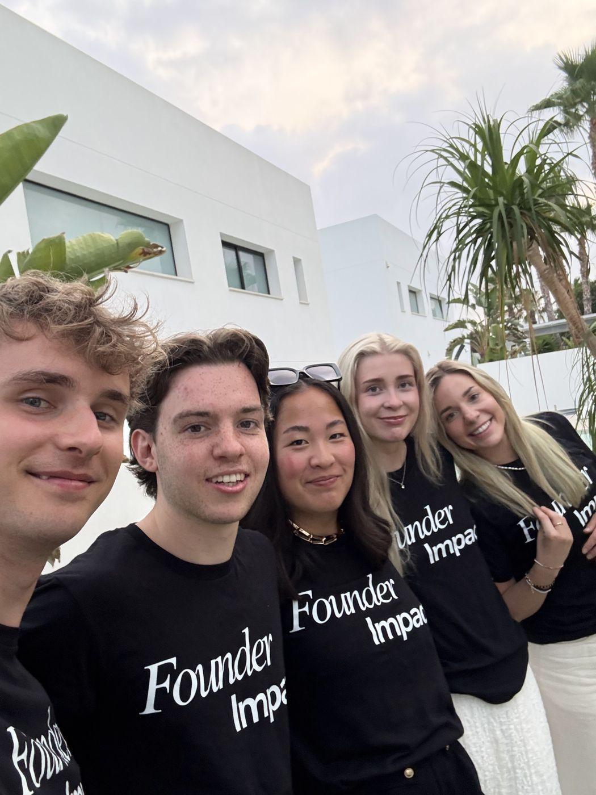
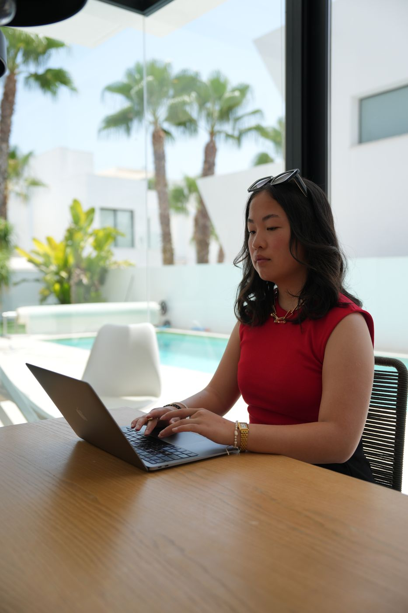
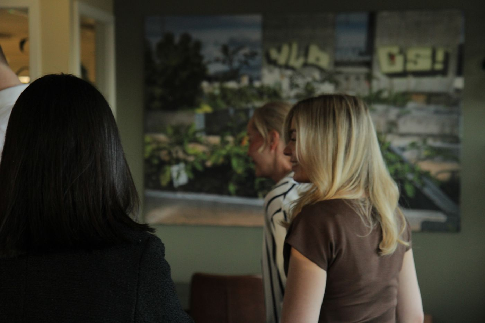

Founder Mindset
The 3 People Every Founder Needs

Most founders spend countless hours thinking about product, marketing, sales, and fundraising.
Few spend enough time thinking about who they surround themselves with.
That's a mistake. Because the people in your corner will shape your progress more than almost any strategy or tool.
Every founder needs three types of people.
1. Someone Ahead of You
This is the person who has already solved the problems you're facing today.
They've hired their first employees, landed early customers, raised capital, or scaled past the stage you're at now.
Their experience is a shortcut. One honest conversation with the right person can save you months of trial and error — and mistakes you didn't even know you were about to make.
2. Someone on the Same Level
These are the people building alongside you.
They understand the uncertainty, the pressure, and the lonely moments that come with being a founder — because they're living it too.
They become your accountability partners, your sounding boards, your reality check. Building is harder than it needs to be when you're doing it alone.
3. Someone Behind You
This is the one most founders overlook.
When you share what you've learned with founders earlier in their journey, something unexpected happens: you get clearer on what you know, you spot patterns you hadn't noticed, and you build relationships that last.
Teaching is one of the fastest ways to learn.
More stories

Founder Mindset
$10k a Month Is Not Success in Itself
I have nothing against making money. I value ambition, and I root for growth. But I’ve been in environments where one goal dominate…

Founder Mindset
The Loneliness Nobody Talks About In Entrepreneurship
Building a company can look exciting from the outside. Freedom. Ambition. Big goals. Working from anywhere. Creating something of your own…